W6. C++: Лямбды, функциональные объекты
1. Краткое содержание
1.1 Технические детали: синонимы в шаблонах и аргументы по умолчанию
Прежде чем переходить к продвинутым средствам шаблонов, полезно зафиксировать два технических нюанса синтаксиса шаблонов в C++, с которыми вы будете сталкиваться постоянно.
1.1.1 typename и class — одна и та же роль
При объявлении type parameter (параметра типа) в заголовке шаблона можно писать либо typename, либо class. В этом месте языка оба ключевых слова полностью взаимозаменяемы:
template <typename T> // Using 'typename'
class C { ... };
template <class T> // Using 'class' — identical meaning
class C { ... };И то и другое означает одно: «T — параметр типа». Ключевое слово class появилось раньше typename (так писали в раннем C++ до стандартизации typename), поэтому в реальном коде встречаются оба стиля. Важно: здесь class не означает, что фактический аргумент обязан быть именно class-типом — подойдут int, double и любые другие типы.
1.1.2 Аргументы шаблона по умолчанию
Как у параметров функции бывают значения по умолчанию, у параметров шаблона бывают default template arguments (аргументы шаблона по умолчанию). Тогда при instantiation (инстанцировании) можно не указывать часть (или все) аргументов типа:
template <typename elem = char> // Default type: char
class String {
// ...
};
String<char> s; // OK: explicit argument
String<> ps1; // OK: uses default → String<char>
String ps2; // ERROR: angle brackets cannot be omitted entirelyС несколькими параметрами картина та же, но действует то же правило, что и у функций: параметры со значениями по умолчанию должны идти после параметров без значений по умолчанию.
template <int N = 10, typename elem = char>
class List { ... };
List<5, int> lst1; // OK: both provided
List<7> lst2; // OK: List<7, char>
List<> lst3; // OK: List<10, char>
List lst4; // ERROR: angle brackets cannot be omitted
List<, int*> lst5; // ERROR: cannot skip first argument with a commaНеверный порядок — например, заголовок вида <int N = 10, typename elem>, если у elem нет значения по умолчанию: после параметра со значением по умолчанию нельзя располагать параметр без значения по умолчанию. Если же у elem значение по умолчанию тоже задано, такая цепочка корректна.
1.2 Инстанцирование шаблонов функций (продолжение)
1.2.1 Неполное явное инстанцирование
Рассмотрим шаблон, у которого есть и non-type parameter (нетиповой параметр, здесь целое), и type parameter (параметр типа):
template <unsigned N, typename T>
T Power(T v) {
T res = v;
for (int i = 1; i < N; i++)
res *= v;
return res;
}Этот шаблон возводит v в степень N. При вызове компилятору нужны обе величины — N и T. Что если указать явно только часть из них?
Complete explicit instantiation (полное явное инстанцирование) — все параметры заданы явно:
int d1 = Power<5, int>(1.2); // N=5, T=int (explicit)Компилятор фиксирует
T = int, поэтому литерал1.2сначала приводится кint(получается1), затем вызовPower<5, int>(1)возвращает1.Incomplete explicit instantiation (неполное явное инстанцирование) — часть параметров выводится из аргументов:
double d2 = Power<5>(1.2); // N=5 (explicit), T=double (deduced from 1.2)Здесь
N = 5берётся из явного спискаPower<5>, аT = doubleвыводится (deduced) из аргумента1.2. Вся цепочка вычислений идёт вdouble, результат примерно2.48832.
Отсюда различие d1 и d2: в первом случае литерал double 1.2 усекается до int до начала вычислений степени.
1.2.2 Три вида инстанцирования
Для шаблона F с двумя параметрами типа:
template <typename T1, typename T2>
void F(T1 v1, T2 v2) { ... }есть три типичных способа его инстанцировать:
| Вызов | Вид | Описание |
|---|---|---|
F<int, float>(v1, v2) |
Complete explicit | Все типы заданы явно |
F<int>(v1, v2) |
Incomplete explicit | Первый тип явно, остальные выводятся |
F(v1, v2) |
Implicit | Все типы выводятся из аргументов |
1.2.3 Стандартные преобразования и как их обойти
Когда параметр шаблона выводится из аргумента, компилятор применяет standard conversions (стандартные преобразования) — например, массив «разлагается» в указатель (array-to-pointer decay):
template <typename T>
int spaceOf(T x) {
int bytes = sizeof(x);
return bytes / 4 + (bytes % 4 > 0);
}
int arr[10]; // sizeof(arr) = 40
cout << spaceOf(arr); // T deduced as int* (pointer!), sizeof(int*) = 8 → prints 2Массив arr при выводе типа «разлагается» в int*, теряя информацию о длине. Чтобы запретить это преобразование и сохранить тип массива, передавайте параметр по ссылке (by reference):
template <typename T>
int spaceOf(T& x) { // Pass by reference: no decay
int bytes = sizeof(x);
return bytes / 4 + (bytes % 4 > 0);
}
cout << spaceOf(arr); // T deduced as int[10], sizeof = 40 → prints 10
cout << spaceOf<int[10]>(); // Same result, explicit type versionПередача по ссылке блокирует стандартное преобразование массив→указатель, поэтому T выводится как полный тип массива int[10].
1.3 Явная специализация
До сих пор шаблон задавал одну реализацию для всех типов. Но иногда универсальная версия не подходит. Возьмём шаблон класса с методом сравнения less:
template <typename T>
class C {
public:
bool less(T& v1, T& v2) {
return v1 < v2; // Works for int, double, etc.
}
};Для числовых типов это работает ожидаемо:
C<int> c1;
bool l1 = c1.less(1, 2); // true: uses operator<
C<double> c2;
bool l2 = c2.less(1.2, 3.4); // true: uses operator<А что со строками в стиле C (const char*)? Оператор < для указателей сравнивает адреса в памяти, а не содержимое строк. Значит, c3.less("abcd", "abcx") сравнивало бы адреса литералов — для лексикографического порядка это неверно.
1.3.1 Синтаксис явной специализации
Решение — дать explicit specialization (явную специализацию): отдельную реализацию именно для конкретного набора аргументов шаблона. Пишется с «пустым» заголовком template <> и конкретным типом в имени класса:
// Generic form: works for all types using operator<
template <typename T>
class C {
public:
bool less(T& v1, T& v2) {
return v1 < v2;
}
};
// Explicit specialization: specific implementation for const char*
template <>
class C<const char*> {
public:
bool less(const char* v1, const char* v2) {
return strcmp(v1, v2) < 0; // Correct string comparison
}
};Ключевые моменты синтаксиса:
template <>— пустые угловые скобки означают: это специализация, а не новый шаблон с параметрами.C<const char*>— конкретный тип, для которого включается эта версия.- Тело может полностью отличаться от primary template (основного шаблона).
1.3.2 Как компилятор выбирает версию
Компилятор сам подбирает нужный вариант:
C<int> c1; // → uses generic form
C<double> c2; // → uses generic form
C<const char*> c3; // → uses explicit specializationbool l1 = c1.less(1, 2); // Generic: 1 < 2 = true
bool l2 = c2.less(1.2, 3.4); // Generic: 1.2 < 3.4 = true
bool l4 = c3.less("abcd", "abcx"); // Specialization: strcmp = true1.3.3 Правила явной специализации — кратко
- Можно задать одну или несколько явных специализаций для конкретных аргументов типа.
- Реализация специализации может полностью расходиться с основным шаблоном.
- Все специализации вместе с основным шаблоном образуют одно семейство классов (one family of classes).
- Каждое обращение — и к основному шаблону, и к специализации — разрешается целиком на этапе compile time (времени компиляции).
1.3.4 Инстанцирование и специализация (instantiation и specialization) — в чём разница
Эти термины часто путают:
- Instantiation (инстанцирование): компилятор сам генерирует класс или функцию из primary template, подставляя фактические аргументы. Этот код вы не пишете — его строит компилятор.
- Specialization (специализация): вы пишете отдельную реализацию для конкретного случая, и компилятор использует её вместо генерации из основного шаблона.

1.3.5 Факториал на этапе компиляции: пример метапрограммирования
Явная специализация открывает приём compile-time computation (вычислений на этапе компиляции). Обычный рекурсивный факториал выполняется в runtime:
unsigned long Fact(unsigned N) {
if (N < 2) return 1;
return N * Fact(N - 1);
}Можно заставить компилятор посчитать факториал на этапе компиляции, используя рекурсивный шаблон функции и явные специализации как базовые случаи (base cases):
Сначала (сломанная) попытка — шаблон рекурсивно вызывает сам себя без корректного «стопа» на уровне инстанцирования:
template <unsigned N>
unsigned long Fact() {
if (N < 2) return 1;
return N * Fact<N - 1>(); // Infinite compile-time recursion!
}Даже при наличии if компилятор всё равно должен инстанцировать Fact<N-1>, что ведёт к бесконечной цепочке (Fact<3> → Fact<2> → Fact<1> → Fact<0> → Fact<UINT_MAX> → …).
Правильное решение — добавить явные специализации для базовых случаев:
// Primary template: N! = N × (N-1)!
template <unsigned N>
unsigned long Fact() {
return N * Fact<N - 1>();
}
// Explicit specialization: base case 0! = 1
template <>
unsigned long Fact<0>() {
return 1;
}
// Explicit specialization: base case 1! = 1
template <>
unsigned long Fact<1>() {
return 1;
}Теперь вызов Fact<3>() заставляет компилятор инстанцировать Fact<3> (→ вызывает Fact<2>) и Fact<2> (→ вызывает Fact<1>). Fact<1> — это уже явная специализация, она возвращает 1 и не порождает дальнейших инстанцирований. Цепочка обрывается. Всё вычисление происходит на этапе compile time: вызов Fact<5>() в скомпилированной программе превращается в константу 120.
1.4 Частичная специализация
Явная специализация привязана к одному конкретному набору аргументов. Но иногда нужна другая реализация для целого класса типов — например, для всех указателей.
1.4.1 Проблема
Продолжим пример C<T> с методом less: пусть для const char* уже есть явная специализация (сравнение строк через strcmp). Рассмотрим два указателя int*:
int* x = ..., *y = ...;
C<int*> c;
c.less(x, y); // Which template is used?Универсальная версия сравнила бы адреса указателей — а не значения по адресам. Нужны отдельные ветки для C<int*>, C<double*>, C<float*> и т.д., а писать явную специализацию на каждый возможный указатель нереалистично.
1.4.2 Синтаксис частичной специализации
Partial specialization (частичная специализация) задаёт другую реализацию для подмножества типов — здесь для всех типов вида указатель:
// Generic form: for all types
template <typename T>
class C {
public:
bool less(const T& v1, const T& v2) { return v1 < v2; }
};
// Explicit specialization: for const char* specifically
template <>
class C<const char*> {
public:
bool less(const char* v1, const char* v2) { return strcmp(v1, v2) < 0; }
};
// Partial specialization: for ALL pointer types (except const char*)
template <typename T>
class C<T*> {
public:
bool less(T* v1, T* v2) { return *v1 < *v2; } // Dereference and compare values
};Заголовок частичной специализации template <typename T> выглядит как обычный шаблонный заголовок; что это именно специализация, показывает запись class C<T*> — type pattern (шаблон в аргументах типа), задающий подмножество типов.

1.4.3 Шаблоны подмножеств типов
Шаблон можно специализировать на разные «семейства» типов:
| Шаблон | Подмножество |
|---|---|
C<const T> |
Все const-квалифицированные варианты |
C<T*> |
Все указатели |
C<T&> |
Все ссылки |
C<T[N]> |
Все массивы фиксированной длины |
C<type (*)(T)> |
Указатели на функции с параметром типа T |
C<T (*)()> |
Указатели на функции, возвращающие T |
1.4.4 Шаблоны в целом — три формы
Сведём вместе три рассмотренные формы:
| Форма | Синтаксис | Назначение |
|---|---|---|
| Primary template | template <typename T> class C { ... } |
Универсальная реализация для всех типов |
| Explicit specialization | template <> class C<int> { ... } |
Отдельная реализация для одного конкретного набора аргументов |
| Partial specialization | template <typename T> class C<T*> { ... } |
Отдельная реализация для подмножества типов (по шаблону) |
1.4.5 Параметры шаблона — три вида
У шаблонов бывают три вида параметров:
Type parameters (параметры типа) — фактический аргумент — это тип:
template <typename T> class C1 { ... }; C1<int> c1;Non-type parameters (нетиповые параметры) — фактический аргумент — константа, адрес или ссылка на внешнюю по отношению к функции сущность (в рамках допустимого набора non-type template arguments):
template <int N, int* P> class C2 { ... }; C2<10, &p> c2;Template template parameters (параметры-шаблоны) — фактический аргумент — сам шаблон:
template <template <typename X> class Container> class C3 { ... }; template <typename TT> class A1 { ... }; C3<A1> c3; // A1 is passed as a template argument
Template template parameters позволяют параметризовать класс не только типом элементов, но и контейнером, в терминах которого выражается хранение — например, Stack, который можно собрать поверх Array или List.
1.5 Функциональные объекты и шаблонные адаптеры
До этого алгоритмы вроде find были «зашиты» под поиск конкретного значения. Здесь появляется более гибкая идея: functional objects (функциональные объекты, часто говорят functor).
1.5.1 Проблема: жёстко заданное условие
Наивная find для массива целых:
const int* find1(const int* pool, int n, int x) {
const int* p = pool;
for (int i = 0; i < n; i++) {
if (*p == x) return p; // Hardcoded equality check
p++;
}
return 0; // Not found
}Так можно искать только равенство. Как искать «первый элемент больше 5» или «первый в диапазоне [0, 100]»?
1.5.2 Указатели на функции: первый шаг
Классический приём — передать function pointer (указатель на функцию, callback):
const int* find2(const int* pool, int n, bool (*cond)(int)) {
const int* p = pool;
for (int i = 0; i < n; i++) {
if (cond(*p)) return p;
p++;
}
return 0;
}
// Usage:
bool cond_eq5(int x) { return x == 5; }
bool cond_range_0_100(int x) { return (x >= 0) && (x <= 100); }
int* p1 = find2(A, 100, cond_eq5);
int* p2 = find2(A, 100, cond_range_0_100);Это гибко, но у модели есть цена по производительности:
- вызов через указатель мешает inlining (встраиванию);
- на современных CPU с конвейером непрямые вызовы часто дают pipeline stalls (простои конвейера).
1.5.3 Функциональные объекты: лучше для компилятора
Functional type (функциональный тип) — это тип с пользовательским call operator (оператором вызова) operator(). Объект такого типа называют functional object (функциональным объектом, functor):
class C {
public:
int operator()(int x) { return expr; }
};
C c;
int z = c(1); // Equivalent to c.operator()(1)Вызов c(1) выглядит как вызов функции, но компилятор знает статический тип c — значит, operator() можно встроить (inline), убрав накладные расходы непрямого вызова.
1.5.4 Обобщённый шаблон компаратора
Ту же идею можно оформить как шаблон компаратора:
template <typename T, T N>
class Greater {
public:
bool operator()(T x) const { return x > N; } // inline
};Тогда find2 можно переписать так, чтобы условием был объект типа Greater<int, 5>:
const int* find2(const int* pool, int n, Greater<int, 5> c) {
const int* p = pool;
for (int i = 0; i < n; i++) {
if (c(*p)) return p;
p++;
}
return 0;
}Но так мы всё ещё привязаны к массиву int и к одному фиксированному компаратору. Следующий шаг — сделать find шаблоном.
1.5.5 Обобщённый find: полное решение
template <typename T, typename Comparator>
T* find3(T* pool, int n, Comparator comp) {
T* p = pool;
for (int i = 0; i < n; i++) {
if (comp(*p)) return p;
p++;
}
return 0;
}Это близко к «идеальной» схеме для учебного примера:
- работает с массивами любого типа
T; - принимает любое условие через
Comparator; - выражение
comp(*p)компилятор может встроить (нет указателя на функцию).
Примеры с разными компараторами:
int* p = find3(A, 100, Greater<int, 5>());
int* q = find3(A, 100, Greater_equal<int, 10>());
int* r = find3(A, 100, Less<int, 0>());Обратите внимание на () в конце Greater<int, 5>() — создаётся временный объект (temporary object), экземпляр класса-компаратора, который передаётся в find3.
1.5.6 Шаблонные адаптеры
Template adapter (шаблонный адаптер) — класс, который оборачивает или комбинирует другие функциональные объекты, чтобы получить новые предикаты. Вместо того чтобы каждый раз писать компаратор «с нуля», можно собирать сложные условия из простых кирпичиков:
// A general two-argument comparator
template <typename T>
class Compare {
public:
bool operator()(T x, T y) const { return x < y; }
};
// Adapter: checks if x is positive (i.e., 0 < x)
template <typename T>
class Positive {
public:
bool operator()(T x) const {
return Compare<T>()(0, x); // Creates Compare<T> and calls it
}
};
// Adapter: checks if x < N
template <typename T, T N>
class Less {
public:
bool operator()(T x) const {
return Compare<T>()(x, N);
}
};Выражение Compare<T>() создаёт временный объект Compare<T>, затем вызов (0, x) обращается к его operator(). На такой идее стоит стандартный заголовок <functional>.
1.6 Функциональное программирование и лямбда-выражения
Современный C++ (начиная с C++11) поддерживает приёмы functional programming (функционального программирования). В его основе — трактовать функции как значения первого класса: их можно хранить, передавать и возвращать так же, как целые числа или строки.
1.6.1 Две опоры функционального стиля
- Immutable objects (неизменяемые объекты): операции лучше строить как преобразование данных в новые данные без порчи исходника; у «чистых» методов нет побочных эффектов — при тех же входах тот же выход. Это упрощает тестирование, рассуждения о корректности и распараллеливание.
- Functions as first-class citizens (функции как полноправные значения): функции — это значения; их можно определять «на месте», класть в переменные, передавать аргументами и возвращать из других функций.
C++ остаётся мультипарадигменным языком, но функциональные приёмы в нём есть. Типичные способы получить «нечто вызываемое»:
- метод экземпляра (instance member function);
- статический метод класса (static class member function);
- обычная свободная функция (standalone function);
- functional object (объект с
operator()); - lambda expression (лямбда-выражение, с C++11).
1.6.2 Лямбды: синтаксис
Lambda expression — это анонимная функция: без имени, задаётся прямо в том месте, где нужна. Синтаксическая форма:
[capture](parameters) -> return_type { body }Пример:
auto f = [](int x) { return x + 1; }; // Lambda: add 1 to x
int y = f(5); // y = 6
auto f1 = f; // Lambdas can be assignedПрефикс [] — это capture list (список захвата), его варианты разберём ниже. Тип возвращаемого значения в простых случаях выводится (deduced) из return.
1.6.3 Лямбда как «литерал функции»
Как 5 или 3.14 — безымянные константные значения, так и лямбда — unnamed function literal (литерал функции без имени):
5,3.14,"abcd"— литералы объектов;[](int x) { return x + 1; }— литерал вызываемой функции.
Лямбду можно вызвать сразу, не сохраняя в переменную:
[](int x) { return x - 1; }(7); // Calls the lambda immediately with argument 7
// Weird but legal! Result: 6Кратчайшая форма для «пустой» лямбды без параметров с немедленным вызовом:
[](){}() // Valid C++: lambda with no params, empty body, called immediately1.6.4 Как задать тип результата
Во многих случаях компилятор выводит тип возвращаемого значения сам, но его можно указать явно:
| Лямбда | Тип результата |
|---|---|
[](int x) { return x + 1; } |
Выводится как int (один return) |
[](int& x) { ++x; } |
Считается void (нет return) |
[](int x) -> int { cout << "Hi"; return x + 1; } |
Явно int |
[] { return sizeof(int); } |
Выводится; () можно опустить, если нет параметров |
Начиная с C++14, явный -> тип нужен реже — вывод работает и для лямбд из нескольких операторов.
1.6.5 Замыкания: захват контекста
Лямбда, которая использует только свои параметры, называют closed term (замкнутым термом):
[](int x) { return x + 1; } // No external dependenciesЕсли лямбда обращается к переменным внешней области видимости, это open term (открытый терм) или closure (замыкание). Список [] задаёт, как именно захватываются внешние имена:
| Синтаксис захвата | Смысл |
|---|---|
[] |
Ничего не захватывать (closed term) |
[x] |
x по значению (неизменяемая копия на момент создания) |
[&x] |
x по ссылке |
[=] |
всё используемое — по значению |
[&] |
всё используемое — по ссылке |
[=, &a] |
по умолчанию по значению, но a — по ссылке |
[*this] |
this по значению (копия объекта) |
[this] |
this по ссылке |
Захват по значению — фиксируется неизменяемая копия в момент создания лямбды:
int more = 1;
auto addMore1 = [more](int x) { return x + more; };
addMore1(10); // Returns 11
more = 9999;
addMore1(10); // Still returns 11 (captured the value 1, not a reference)Захват по ссылке — при каждом вызове читается текущее значение переменной:
int more = 1;
auto addMore2 = [&more](int x) { return x + more; };
addMore2(10); // Returns 11
more = 9999;
addMore2(10); // Returns 10009 (sees the updated value)mutable и копии внутри лямбды — по умолчанию захваченные по значению поля внутри лямбды нельзя менять; ключевое слово mutable разрешает менять копию внутри замыкания, не трогая оригинал:
int more = 1;
auto addMore4 = [more](int x) mutable {
more++; // OK: modifies the lambda's copy
return x + more;
};
addMore4(10); // Returns 12 (lambda's copy: 1 → 2)
cout << more; // Prints 1 (original unchanged)
more = 10;
addMore4(10); // Returns 13 (lambda's copy now: 2 → 3, independent of original)Глобальные переменные в список захвата не включают — к ним и так есть доступ (и изменение) из любой лямбды:
int more = 1; // global
auto addMore = [](int x) { return x + more; }; // OK: more is global1.6.6 Внутреннее представление лямбды
На практике компилятор переводит лямбду в безымянный класс с operator():
// This lambda:
[](int x) { return x + 1; }
// Is internally equivalent to:
class __LambdaName__ {
public:
int operator()(int x) const { return x + 1; }
};
__LambdaName__() // Temporary object created when lambda is writtenЗначит, [](int x) { return x + 1; }(7) по смыслу совпадает с __LambdaName__()(7).
Если есть захваты, они становятся полями данных безымянного класса.
1.6.7 Тип лямбды
Тип лямбды — уникальный безымянный тип, который генерирует компилятор; записать его «вручную» нельзя. Для хранения удобнее auto:
auto f = [](int x) { return x + 1; };Если нужен type-erased (стирание типа) вызываемого объекта, используют std::function<Signature> из <functional>:
std::function<int(int)> f = [](int x) { return x + 1; };
f(5); // Returns 61.6.8 Лямбды и алгоритмы STL
С алгоритмами STL лямбды особенно удобны: не заводя отдельную именованную функцию ради std::sort или std::for_each, можно написать логику прямо в вызове:
#include <algorithm>
#include <vector>
#include <iostream>
int x = 10;
vector<int> numbers = {5, 2, 8, 1, 9, 3, 6};
// Sort ascending using a lambda comparator
sort(numbers.begin(), numbers.end(), [](int a, int b) {
return a < b;
});
// Print each element plus x, capturing x by reference
for_each(numbers.begin(), numbers.end(), [&x](int num) {
cout << num + x << " ";
});2. Определения
- Template parameter (параметр шаблона): заполнитель в определении шаблона; может быть параметром типа (
typename T), non-type-параметром (например,int N) или параметром-шаблоном (другим шаблоном). - Default template argument (аргумент шаблона по умолчанию): тип или значение по умолчанию для параметра шаблона, если аргумент при инстанцировании опущен (угловые скобки
<>всё равно нужны). - Complete explicit instantiation (полное явное инстанцирование): все параметры шаблона заданы явно в угловых скобках в месте вызова.
- Incomplete explicit instantiation (неполное явное инстанцирование): часть параметров задана явно, остальные выводятся из аргументов функции.
- Implicit instantiation (неявное инстанцирование): все параметры шаблона выводятся автоматически из типов фактических аргументов.
- Standard conversion (стандартное преобразование): автоматическое преобразование, которое компилятор применяет при выводе аргументов шаблона; например, массив «превращается» в указатель.
- Explicit specialization (явная специализация): отдельная реализация шаблона для конкретного набора аргументов, вводится записью
template <>. - Partial specialization (частичная специализация): реализация шаблона класса для подмножества типов (например, всех указателей) через type pattern, а не через один конкретный тип.
- Primary template (основной шаблон): исходное универсальное определение, от которого строятся инстанцирования и специализации.
- Template template parameter (параметр-шаблон): параметр шаблона, которому в качестве аргумента передают сам шаблон (не тип и не значение).
- Metaprogramming (метапрограммирование): использование системы шаблонов C++ для вычислений на этапе компиляции вместо выполнения в runtime.
- Functional type (функциональный тип): тип с определённым
operator(), объекты которого можно вызывать синтаксисом вызова функции. - Functional object (functor) (функциональный объект, функтор): экземпляр функционального типа — объект, который «вызывается как функция».
- Template adapter (шаблонный адаптер): шаблон класса, который оборачивает или комбинирует другие функциональные объекты, получая новые предикаты или операции.
- Lambda expression (лямбда-выражение): анонимная inline-функция с синтаксисом
[capture](params) { body }; появилась в C++11. - Capture list (список захвата): префикс
[]в лямбде — какие переменные внешней области и как (по значению или по ссылке) попадают в замыкание. - Closure (замыкание): лямбда, которая захватывает переменные внешней области и тем самым несёт в себе «состояние окружения».
- Closed term (замкнутый терм): лямбда без зависимостей от внешних переменных (пустой список захвата
[]). - Open term (открытый терм): лямбда, использующая внешние переменные (непустой список захвата).
- Mutable lambda: лямбда с ключевым словом
mutable, где можно менять копии захваченных по значению полей внутри объекта замыкания (оригинал снаружи не меняется). std::function: стандартный шаблон класса — type-erased обёртка над любым вызываемым объектом (указатель на функцию, функтор или лямбда).- Immutable object (неизменяемый объект): в функциональной парадигме объект, состояние которого после создания не меняют; операции строят как получение новых значений вместо порчи старых.
3. Примеры
3.1. Стандартное преобразование и как его обойти (Лаба 6, Задание 1)
Объясните вывод следующей программы и почему spaceOf(arr) даёт разные результаты в двух версиях:
Версия 1 — передача по значению:
template <typename T>
int spaceOf(T x) {
int bytes = sizeof(x);
return bytes / 4 + (bytes % 4 > 0);
}
int arr[10];
cout << spaceOf(arr) << endl; // Output: ?
cout << spaceOf<int[10]>() << endl; // This version takes no argumentВерсия 2 — передача по ссылке:
template <typename T>
int spaceOf(T& x) {
int bytes = sizeof(x);
return bytes / 4 + (bytes % 4 > 0);
}
int arr[10];
cout << spaceOf(arr) << endl; // Output: ?
cout << spaceOf<int[10]>() << endl; // This version takes no argumentНажмите, чтобы увидеть решение
Ключевая идея: при передаче по значению массив «разлагается» в указатель; ссылка запрещает это преобразование и сохраняет тип массива.
Версия 1 (по значению):
spaceOf(arr): массивarrпри передаче аргумента превращается вint*.Tвыводится какint*. На 64-битной платформе обычноsizeof(int*) = 8. Итог:- Вызов шаблона без аргумента
spaceOf<int[10]>()использует тип напрямую:sizeof(int[10]) = 40. Итог:
Версия 2 (по ссылке):
spaceOf(arr): передача по ссылке (T& x) блокирует array-to-pointer decay.Tвыводится какint[10],sizeof(int[10]) = 40. Итог:- То же, что и у явного
spaceOf<int[10]>().
Сводка:
| Вызов | Версия 1 (по значению) | Версия 2 (по ссылке) |
|---|---|---|
spaceOf(arr) |
2 (размер указателя) | 10 (размер массива) |
spaceOf<int[10]>() |
10 | 10 |
Ответ: в версии 1 для spaceOf(arr) печатается 2, потому что массив стал указателем; в версии 2 — 10, потому что ссылка сохраняет тип массива и sizeof измеряет весь массив целиком.
3.2. Шаблон Wrapper и явная специализация (Лаба 6, Задание 2)
Создайте шаблон класса Wrapper, который хранит одно значение произвольного типа и даёт метод getValue(). Затем добавьте явную специализацию для const char*, где getValue() возвращает длину строки, а не саму строку.
Нажмите, чтобы увидеть решение
Ключевая идея: универсальный шаблон хранит и возвращает значение как есть; явная специализация для const char* меняет контракт: getValue() возвращает длину строки.
#include <iostream>
#include <cstring>
using namespace std;
// Generic template: stores and returns any value
template <typename T>
class Wrapper {
T value;
public:
Wrapper(T v) : value(v) { }
T getValue() const { return value; }
};
// Explicit specialization: for const char* return string length
template <>
class Wrapper<const char*> {
const char* value;
public:
Wrapper(const char* v) : value(v) { }
size_t getValue() const { return strlen(value); }
};
int main() {
Wrapper<int> wi(42);
Wrapper<double> wd(3.14);
Wrapper<const char*> ws("Hello");
cout << wi.getValue() << endl; // 42
cout << wd.getValue() << endl; // 3.14
cout << ws.getValue() << endl; // 5 (length of "Hello")
}Ответ: Wrapper<T> хранит и возвращает значение без изменений; Wrapper<const char*> хранит указатель, а getValue() возвращает strlen(value) — число символов строки.
3.3. Словарь: шаблон и частичная специализация (Лаба 6, Задание 3)
Реализуйте шаблон класса
Dictionary<K, V>с методамиget(K key),put(K key, V value),remove(K key)иsize().Добавьте частичную специализацию
Dictionary<K, int>, гдеget(K key)возвращает модуль (absolute value) сохранённого целого, аsize()— сумму всех значений.
Нажмите, чтобы увидеть решение
Ключевая идея: частичная специализация Dictionary<K, int> покрывает все случаи, где V = int, при любом K; для get и size задаётся другая семантика.
#include <iostream>
#include <map>
#include <cstdlib>
#include <numeric>
using namespace std;
// Generic Dictionary template
template <typename K, typename V>
class Dictionary {
map<K, V> data;
public:
V get(K key) const {
return data.at(key); // Throws if key not found
}
void put(K key, V value) {
data[key] = value;
}
void remove(K key) {
data.erase(key);
}
int size() const {
return data.size();
}
};
// Partial specialization for int values
template <typename K>
class Dictionary<K, int> {
map<K, int> data;
public:
int get(K key) const {
return abs(data.at(key)); // Return absolute value
}
void put(K key, int value) {
data[key] = value;
}
void remove(K key) {
data.erase(key);
}
int size() const {
int sum = 0;
for (auto& pair : data)
sum += pair.second;
return sum; // Return sum of all values
}
};
int main() {
// Generic version
Dictionary<string, double> d1;
d1.put("pi", 3.14);
d1.put("e", 2.71);
cout << d1.get("pi") << endl; // 3.14
cout << d1.size() << endl; // 2 (count)
// Partial specialization (K=string, V=int)
Dictionary<string, int> d2;
d2.put("x", -5);
d2.put("y", 3);
cout << d2.get("x") << endl; // 5 (absolute value of -5)
cout << d2.size() << endl; // -2 (sum: -5 + 3)
}Ответ: основной шаблон ведёт себя как обычный словарь на map. Частичная специализация для int переопределяет get (возвращает abs(value)) и size() (возвращает сумму всех сохранённых целых).
3.4. Свой map и filter с лямбдами (Лаба 6, Задание 4)
Реализуйте функции customMap и customFilter, которые принимают vector<int> и указатель на функцию (callback). Покажите использование с лямбдами.
customMap(vec, func)применяетfuncк каждому элементу и возвращает новый вектор результатов.customFilter(vec, pred)возвращает новый вектор из элементов, для которыхpredдаётtrue.
Нажмите, чтобы увидеть решение
Ключевая идея: обе функции принимают function pointer; лямбду без захвата можно передать туда, где ожидается указатель на функцию (implicit conversion).
#include <iostream>
#include <vector>
using namespace std;
// Map: apply func to every element
vector<int> customMap(const vector<int>& vec, int (*func)(int)) {
vector<int> result;
for (int elem : vec) {
result.push_back(func(elem));
}
return result;
}
// Filter: keep elements for which pred returns true
vector<int> customFilter(const vector<int>& vec, bool (*pred)(int)) {
vector<int> result;
for (int elem : vec) {
if (pred(elem)) result.push_back(elem);
}
return result;
}
int main() {
vector<int> nums = {1, 2, 3, 4, 5};
// Map: square each element
auto squared = customMap(nums, [](int x) { return x * x; });
// squared = {1, 4, 9, 16, 25}
// Map: double each element
auto doubled = customMap(nums, [](int x) { return x * 2; });
// doubled = {2, 4, 6, 8, 10}
// Filter: keep only odd numbers
auto odds = customFilter(nums, [](int x) { return x % 2 != 0; });
// odds = {1, 3, 5}
// Filter: keep only even numbers
auto evens = customFilter(nums, [](int x) { return x % 2 == 0; });
// evens = {2, 4}
// Print results
for (int v : squared) cout << v << " "; // 1 4 9 16 25
cout << endl;
for (int v : odds) cout << v << " "; // 1 3 5
cout << endl;
}Ответ: customMap строит новый вектор, применяя func к каждому элементу; customFilter — вектор элементов, удовлетворяющих pred. Лямбды с пустым [] неявно приводимы к указателям на функции.
3.5. Аргументы шаблона по умолчанию (Лекция 6, Пример 1)
Дан шаблон:
template <typename elem = char>
class String { /* ... */ };Какие из объявлений ниже корректны и какой тип у elem в каждом допустимом случае?
String<char> s;
String<> ps1;
String ps2;Нажмите, чтобы увидеть решение
Ключевая идея: если у шаблона есть значение по умолчанию, аргумент можно опустить, но угловые скобки <> всё равно нужны; полностью убрать скобки нельзя.
String<char> s;— корректно. Явно заданchar, значитelem = char.String<> ps1;— корректно. Пустые<>явно запрашивают инстанцирование с аргументами по умолчанию:elem = char.String ps2;— некорректно. Для шаблонного типа нельзя опустить угловые скобки целиком — это ошибка компиляции.
Ответ:
String<char> s— ок,elem = charString<> ps1— ок,elem = char(подставляется значение по умолчанию)String ps2— ошибка компиляции: скобки у шаблонного типа обязательны
3.6. Разница между Power<5>(1.2) и Power<5, int>(1.2) (Лекция 6, Пример 2)
Дано:
template <unsigned N, typename T>
T Power(T v) {
T res = v;
for (int i = 1; i < N; i++)
res *= v;
return res;
}
int main() {
double d1 = Power<5>(1.2);
double d2 = Power<5, int>(1.2);
std::cout << d1 << " " << d2;
}Почему d1 и d2 различаются?
Нажмите, чтобы увидеть решение
Ключевая идея: неполное против полного явного инстанцирования — от типа T зависит, будет ли литерал 1.2 усекаться до int до вычислений.
Power<5>(1.2)— incomplete explicit instantiation:N = 5берётся из явного списка<5>Tвыводится из аргумента1.2→T = double- компилятор строит
double Power<5>(double v) - вычисление:
d1 ≈ 2.48832
Power<5, int>(1.2)— complete explicit instantiation:N = 5,T = int— оба заданы в<5, int>- компилятор строит
int Power<5>(int v) - аргумент
1.2приводится кint→ получается1 - вычисление:
- результат
1присваиваетсяdouble:d2 = 1.0
Ответ: d1 ≈ 2.48832, d2 = 1.0. Разница из‑за того, что в Power<5, int> литерал double 1.2 сначала усекается до int (1), и уже потом считается степень.
3.7. Явная специализация для сравнения строк (Лекция 6, Пример 3)
Дан универсальный шаблон C<T> и использование с const char*:
template <typename T>
class C {
public:
bool less(T& v1, T& v2) { return v1 < v2; }
};
C<const char*> c3;
bool result = c3.less("abcd", "abcx");- Что вычисляет универсальный шаблон для типов
const char*? - Напишите явную специализацию, которая корректно сравнивает строки в стиле C.
Нажмите, чтобы увидеть решение
Ключевая идея: для указателей operator< сравнивает адреса, а не содержимое строк; явная специализация подменяет реализацию для конкретного типа.
(a) Поведение универсального шаблона для const char*:
Выражение v1 < v2 сравнивает значения указателей (адреса литералов в памяти). Результат зависит от размещения в памяти и не совпадает с лексикографическим порядком строк — для сравнения строк это неверно.
(b) Явная специализация:
template <>
class C<const char*> {
public:
bool less(const char* v1, const char* v2) {
return strcmp(v1, v2) < 0;
}
};template <>— пустые угловые скобки: это explicit specializationC<const char*>— версия только дляT = const char*strcmp(v1, v2) < 0—true, еслиv1лексикографически меньшеv2
Тогда:
C<int> c1; c1.less(1, 2); // Uses generic form
C<const char*> c3; c3.less("abcd", "abcx"); // Uses specialization → strcmpОтвет: универсальная версия сравнивает адреса (для строк это неверно); явная специализация использует strcmp для лексикографического порядка.
3.8. Факториал на этапе компиляции (Лекция 6, Пример 4)
Объясните, почему следующий шаблон приводит к «бесконечности» на этапе компиляции, и приведите корректную реализацию с явными специализациями:
// Broken version
template <unsigned N>
unsigned long Fact() {
if (N < 2) return 1;
return N * Fact<N - 1>();
}Нажмите, чтобы увидеть решение
Ключевая идея: инстанцирование шаблонов происходит на этапе компиляции. Даже если ветка никогда не выполнится в runtime, компилятор всё равно должен инстанцировать все упомянутые шаблоны — без базового случая получается бесконечная цепочка инстанцирования.
Почему «сломанная» версия не работает:
Обрабатывая Fact<3>(), компилятор видит вызов Fact<3 - 1>() = Fact<2>(), затем Fact<1>, Fact<0>, далее Fact<UINT_MAX> и т.д. Проверка if (N < 2) — это логика runtime, а не остановка рекурсии инстанцирования на этапе компиляции.
Корректная реализация:
// Primary template: recursive case
template <unsigned N>
unsigned long Fact() {
return N * Fact<N - 1>();
}
// Base case: 0! = 1
template <>
unsigned long Fact<0>() {
return 1;
}
// Base case: 1! = 1
template <>
unsigned long Fact<1>() {
return 1;
}Как это работает:
Fact<3>() → 3 * Fact<2>()
Fact<2>() → 2 * Fact<1>()
Fact<1>() → 1 ← explicit specialization, terminates!Компилятор инстанцирует Fact<3>, Fact<2>, затем попадает в Fact<1> — явная специализация возвращает 1 и не тянет за собой Fact<0>. Рекурсия обрывается. Значение 6 получается на этапе компиляции.
Ответ: в «сломанной» версии бесконечное инстанцирование возникает потому, что if не останавливает компиляторную рекурсию. Исправление — явные специализации для N=0 и N=1, которые сразу возвращают 1 без дальнейших вызовов.
3.9. Частичная специализация для указателей (Лекция 6, Пример 5)
Даны шаблоны:
template <typename T>
class C {
public:
bool less(const T& v1, const T& v2) { return v1 < v2; }
};
template <>
class C<const char*> {
public:
bool less(const char* v1, const char* v2) { return strcmp(v1, v2) < 0; }
};Добавьте частичную специализацию для всех типов указателей (кроме случая const char*, для которого уже есть явная специализация), которая сравнивает значения по адресам, а не сами адреса.
Нажмите, чтобы увидеть решение
Ключевая идея: в partial specialization используется шаблон в аргументе (здесь T*), чтобы покрыть целое семейство типов; компилятор выбирает наиболее специфичную подходящую версию.
// Partial specialization for all T* types
template <typename T>
class C<T*> {
public:
bool less(T* v1, T* v2) {
return *v1 < *v2; // Dereference to compare actual values
}
};Тогда разрешение инстанцирования выглядит так:
C<int>— primary template (дляintнет более специфичной ветки)C<double>— primary templateC<const char*>— explicit specialization (наиболее специфичное совпадение)C<int*>— partial specialization сT = intC<double*>— partial specialization сT = double
int a = 3, b = 5;
C<int*> cp;
bool result = cp.less(&a, &b); // *(&a) < *(&b) → 3 < 5 → trueОтвет: template <typename T> class C<T*> покрывает все указатели; для C<int*> параметр T есть int, а в теле оба указателя разыменовываются для сравнения значений.
3.10. Числа Фибоначчи и явные специализации (Лекция 6, Пример 6)
Реализуйте вычисление Fib на этапе компиляции с помощью шаблона функции и явных специализаций базовых случаев:
Нажмите, чтобы увидеть решение
Ключевая идея: как и у факториала на этапе компиляции, для Fib нужны явные специализации базовых случаев, чтобы остановить рекурсию инстанцирования; иначе компилятор уйдёт в бесконечность.
#include <iostream>
using namespace std;
// Primary template: Fib(N) = Fib(N-1) + Fib(N-2)
template <unsigned N>
unsigned long Fib() {
return Fib<N - 1>() + Fib<N - 2>();
}
// Base case: Fib(1) = 1
template <>
unsigned long Fib<1>() {
return 1;
}
// Base case: Fib(2) = 1
template <>
unsigned long Fib<2>() {
return 1;
}
int main() {
cout << Fib<1>() << endl; // 1
cout << Fib<2>() << endl; // 1
cout << Fib<3>() << endl; // 2
cout << Fib<5>() << endl; // 5
cout << Fib<10>() << endl; // 55
}Как устроено для Fib<5>():
Fib<5> = Fib<4> + Fib<3>
Fib<4> = Fib<3> + Fib<2>
Fib<3> = Fib<2> + Fib<1>
Fib<2> = 1 ← specialization
Fib<1> = 1 ← specializationВсе вычисления выполняются на этапе компиляции: вызов Fib<10>() превращается в константу 55 в бинарнике.
Ответ: primary template задаёт Fib<N-1>() + Fib<N-2>(); явные специализации для N=1 и N=2 возвращают 1 и обрывают рекурсию.
3.11. Функциональные объекты: обобщённый find (Туториал 6, Пример 1)
Дан шаблон функции find3:
template <typename T, typename Comparator>
T* find3(T* pool, int n, Comparator comp) {
T* p = pool;
for (int i = 0; i < n; i++) {
if (comp(*p)) return p;
p++;
}
return 0;
}И шаблоны компараторов:
template <typename T, T N>
class Greater {
public:
bool operator()(T x) const { return x > N; }
};
template <typename T, T N>
class Less {
public:
bool operator()(T x) const { return x < N; }
};Напишите код, который находит (a) первый элемент, больший 5, и (b) первый элемент, меньший 0, в массиве int A[100].
Нажмите, чтобы увидеть решение
Ключевая идея: find3 принимает любой вызываемый объект, у которого operator() принимает один аргумент типа T; компаратор передают временным объектом Comparator().
(a) Первый элемент больше 5:
int* p = find3(A, 100, Greater<int, 5>());
// ^^^^^^^^^^^^^^^^
// Creates a temporary Greater<int,5> object
if (p != nullptr) {
cout << "Found: " << *p << endl;
} else {
cout << "Not found" << endl;
}Tвыводится какintизA(типint*)Comparatorвыводится какGreater<int, 5>- для каждого элемента вызывается
comp(*p), что при inlining сводится к проверке*p > 5
(b) Первый элемент меньше 0:
int* q = find3(A, 100, Less<int, 0>());
if (q != nullptr) {
cout << "Found negative: " << *q << endl;
}Ответ:
int* p = find3(A, 100, Greater<int, 5>()); // (a)
int* q = find3(A, 100, Less<int, 0>()); // (b)3.12. Замыкания лямбды: значение и ссылка (Туториал 6, Пример 2)
Проследите вывод программы и объясните каждый результат:
int more = 1;
auto addMore1 = [more](int x) { return x + more; };
auto addMore2 = [&more](int x) { return x + more; };
cout << addMore1(10) << endl; // (a)
cout << addMore2(10) << endl; // (b)
more = 9999;
cout << addMore1(10) << endl; // (c)
cout << addMore2(10) << endl; // (d)Нажмите, чтобы увидеть решение
Ключевая идея: захват по значению ([more]) фиксирует неизменяемую копию на момент создания лямбды; захват по ссылке ([&more]) каждый раз читает текущее значение переменной.
addMore1(10)до изменения (a):moreзахвачен по значению как1. РезультатaddMore2(10)до изменения (b):moreзахвачен по ссылке, текущее значение1. РезультатaddMore1(10)послеmore = 9999(c): в лямбде своя копияmore = 1, независимая от оригинала. СноваaddMore2(10)послеmore = 9999(d): лямбда держит ссылку наmore, сейчас там9999. Результат
Ответ:
11 // (a): value capture, more=1
11 // (b): reference capture, more=1
11 // (c): value capture, copy still holds 1
10009 // (d): reference capture, sees updated more=9999